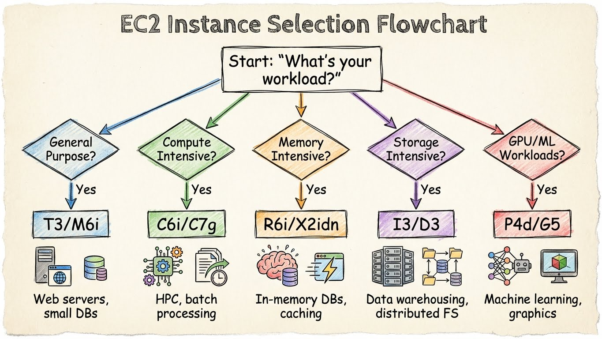

Module 2 : EC2 - Compute dans le Cloud
Objectifs du Module
À la fin de ce module, vous serez capable de :
- Créer et configurer des instances EC2
- Gérer les volumes EBS (Elastic Block Store)
- Créer des AMIs personnalisées
- Configurer Auto Scaling Groups
- Optimiser les coûts (Spot, Reserved, Savings Plans)
Prérequis
- Module 1 complété (IAM, AWS CLI configuré)
- Compréhension des concepts de virtualisation
- Notions de networking (IP, ports, SSH)
1. Concepts Fondamentaux EC2
1.1 Qu'est-ce qu'EC2 ?
EC2 (Elastic Compute Cloud) = Machines virtuelles à la demande dans le cloud AWS.

graph TD
subgraph "AWS Region: eu-west-1"
subgraph "Availability Zone A"
EC2_1["💻 EC2 Instance"]
EBS_1["💾 EBS Volume"]
EC2_1 --> EBS_1
end
subgraph "Availability Zone B"
EC2_2["💻 EC2 Instance"]
EBS_2["💾 EBS Volume"]
EC2_2 --> EBS_2
end
AMI["📀 AMI<br/>(Amazon Machine Image)"]
SG["🔒 Security Group"]
AMI -.->|Launch from| EC2_1
AMI -.->|Launch from| EC2_2
SG -.->|Attached to| EC2_1
SG -.->|Attached to| EC2_2
end
style EC2_1 fill:#ff9900,color:#000
style EC2_2 fill:#ff9900,color:#0001.2 Familles d'Instances

graph LR
subgraph "Instance Families"
T["🔋 T-Series<br/>Burstable"]
M["⚖️ M-Series<br/>General Purpose"]
C["🚀 C-Series<br/>Compute Optimized"]
R["🧠 R-Series<br/>Memory Optimized"]
I["💾 I-Series<br/>Storage Optimized"]
G["🎮 G-Series<br/>GPU"]
end
T -->|"t3.micro<br/>2 vCPU, 1GB"| USE_T["Dev/Test<br/>Low traffic web"]
M -->|"m6i.large<br/>2 vCPU, 8GB"| USE_M["Production apps<br/>Databases"]
C -->|"c6i.xlarge<br/>4 vCPU, 8GB"| USE_C["Batch processing<br/>Gaming servers"]
R -->|"r6i.large<br/>2 vCPU, 16GB"| USE_R["In-memory cache<br/>Big data"]
I -->|"i3.large<br/>2 vCPU, 15.25GB"| USE_I["NoSQL<br/>Data warehousing"]
G -->|"g4dn.xlarge<br/>4 vCPU, 16GB"| USE_G["ML Training<br/>3D Rendering"]
style T fill:#34a853,color:#fff
style M fill:#1a73e8,color:#fff
style C fill:#ea4335,color:#fff
style R fill:#9c27b0,color:#fffNomenclature des instances :
m6i.2xlarge
│││ │
││└──┼── Generation (6ème génération)
│└───┼── Processor type (i = Intel, a = AMD, g = Graviton)
└────┼── Family (m = General Purpose)
└── Size (xlarge, 2xlarge, 4xlarge...)
1.3 Arbre de Décision - Choix d'Instance

flowchart TD
START([Quel workload ?]) --> Q1{Trafic variable<br/>ou constant ?}
Q1 -->|Variable/Burst| T["T-Series<br/>(t3, t4g)"]
Q1 -->|Constant| Q2{Besoin principal ?}
Q2 -->|Équilibré CPU/RAM| M["M-Series<br/>(m6i, m7g)"]
Q2 -->|CPU intensif| C["C-Series<br/>(c6i, c7g)"]
Q2 -->|RAM intensive| R["R-Series<br/>(r6i, r7g)"]
Q2 -->|Storage I/O| I["I-Series<br/>(i3, i4i)"]
Q2 -->|GPU/ML| G["G/P-Series<br/>(g4dn, p4d)"]
T --> COST1{Budget ?}
M --> COST2{Budget ?}
COST1 -->|Minimal| SPOT1["Spot Instance"]
COST1 -->|Prévisible| RI1["Reserved/Savings Plan"]
COST2 -->|Minimal| SPOT2["Spot Instance"]
COST2 -->|Prévisible| RI2["Reserved/Savings Plan"]
style T fill:#34a853,color:#fff
style M fill:#1a73e8,color:#fff
style C fill:#ea4335,color:#fff
style R fill:#9c27b0,color:#fff2. Lancer une Instance EC2
2.1 Via la Console
- EC2 Dashboard → Launch Instance
- Name and Tags :
web-server-prod - AMI : Amazon Linux 2023 (Free tier eligible)
- Instance type : t3.micro
- Key pair : Créer ou sélectionner une clé SSH
- Network settings : VPC, Subnet, Security Group
- Storage : 8 GB gp3 (par défaut)
- Advanced details : User data (optionnel)
2.2 Via AWS CLI
# Lister les AMIs Amazon Linux 2023 récentes
aws ec2 describe-images \
--owners amazon \
--filters "Name=name,Values=al2023-ami-2023*-x86_64" \
--query 'Images | sort_by(@, &CreationDate) | [-1].[ImageId,Name]' \
--output table
# Créer une key pair
aws ec2 create-key-pair \
--key-name my-key \
--query 'KeyMaterial' \
--output text > my-key.pem
chmod 400 my-key.pem
# Lancer une instance
aws ec2 run-instances \
--image-id ami-0123456789abcdef0 \
--instance-type t3.micro \
--key-name my-key \
--security-group-ids sg-0123456789abcdef0 \
--subnet-id subnet-0123456789abcdef0 \
--tag-specifications 'ResourceType=instance,Tags=[{Key=Name,Value=web-server-prod},{Key=Environment,Value=production}]' \
--user-data file://startup-script.sh \
--iam-instance-profile Name=EC2-S3-ReadOnly-Profile
# Vérifier le statut
aws ec2 describe-instances \
--filters "Name=tag:Name,Values=web-server-prod" \
--query 'Reservations[].Instances[].[InstanceId,State.Name,PublicIpAddress]' \
--output table
2.3 User Data (Startup Script)
#!/bin/bash
# startup-script.sh - Exécuté au premier boot
# Mise à jour système
dnf update -y
# Installation de packages
dnf install -y httpd php php-mysqlnd
# Démarrage du service
systemctl enable --now httpd
# Page de test
cat > /var/www/html/index.html << 'EOF'
<!DOCTYPE html>
<html>
<head><title>EC2 Web Server</title></head>
<body>
<h1>Hello from EC2!</h1>
<p>Instance ID: $(curl -s http://169.254.169.254/latest/meta-data/instance-id)</p>
<p>Availability Zone: $(curl -s http://169.254.169.254/latest/meta-data/placement/availability-zone)</p>
</body>
</html>
EOF
# Signal de completion (pour CloudFormation/ASG)
/opt/aws/bin/cfn-signal -e $? --stack ${AWS::StackName} --resource WebServer --region ${AWS::Region}
3. Instance Metadata Service (IMDS)
3.1 IMDSv2 (Recommandé)
# Obtenir un token de session (valide 6h max)
TOKEN=$(curl -X PUT "http://169.254.169.254/latest/api/token" \
-H "X-aws-ec2-metadata-token-ttl-seconds: 21600")
# Utiliser le token pour les requêtes
curl -H "X-aws-ec2-metadata-token: $TOKEN" \
http://169.254.169.254/latest/meta-data/
# Informations utiles
curl -H "X-aws-ec2-metadata-token: $TOKEN" \
http://169.254.169.254/latest/meta-data/instance-id
curl -H "X-aws-ec2-metadata-token: $TOKEN" \
http://169.254.169.254/latest/meta-data/local-ipv4
curl -H "X-aws-ec2-metadata-token: $TOKEN" \
http://169.254.169.254/latest/meta-data/public-ipv4
curl -H "X-aws-ec2-metadata-token: $TOKEN" \
http://169.254.169.254/latest/meta-data/iam/security-credentials/
# Récupérer les credentials du role attaché
curl -H "X-aws-ec2-metadata-token: $TOKEN" \
http://169.254.169.254/latest/meta-data/iam/security-credentials/EC2-S3-ReadOnly
3.2 Forcer IMDSv2
# Lors de la création
aws ec2 run-instances \
--metadata-options "HttpTokens=required,HttpPutResponseHopLimit=1,HttpEndpoint=enabled" \
...
# Sur une instance existante
aws ec2 modify-instance-metadata-options \
--instance-id i-0123456789abcdef0 \
--http-tokens required \
--http-put-response-hop-limit 1 \
--http-endpoint enabled
4. Security Groups
4.1 Concept
Les Security Groups sont des firewalls stateful au niveau de l'instance :
graph LR
INTERNET((Internet)) --> SG_WEB
subgraph "Security Group: web-sg"
SG_WEB["🔒 Inbound Rules<br/>HTTP 80 ✅<br/>HTTPS 443 ✅<br/>SSH 22 (from bastion) ✅"]
end
SG_WEB --> EC2_WEB["💻 Web Server"]
EC2_WEB --> SG_DB
subgraph "Security Group: db-sg"
SG_DB["🔒 Inbound Rules<br/>MySQL 3306 (from web-sg) ✅"]
end
SG_DB --> RDS["🗄️ Database"]
style SG_WEB fill:#ff9900,color:#000
style SG_DB fill:#ff9900,color:#0004.2 Création et Configuration
# Créer un Security Group
aws ec2 create-security-group \
--group-name web-server-sg \
--description "Security group for web servers" \
--vpc-id vpc-0123456789abcdef0
# Autoriser HTTP depuis Internet
aws ec2 authorize-security-group-ingress \
--group-id sg-0123456789abcdef0 \
--protocol tcp \
--port 80 \
--cidr 0.0.0.0/0
# Autoriser HTTPS depuis Internet
aws ec2 authorize-security-group-ingress \
--group-id sg-0123456789abcdef0 \
--protocol tcp \
--port 443 \
--cidr 0.0.0.0/0
# Autoriser SSH depuis un Security Group spécifique (bastion)
aws ec2 authorize-security-group-ingress \
--group-id sg-0123456789abcdef0 \
--protocol tcp \
--port 22 \
--source-group sg-bastion123456789
# Lister les règles
aws ec2 describe-security-groups \
--group-ids sg-0123456789abcdef0 \
--query 'SecurityGroups[].IpPermissions'
5. EBS - Elastic Block Store
5.1 Types de Volumes
| Type | Use Case | IOPS | Throughput | Prix |
|---|---|---|---|---|
| gp3 | Usage général, boot volumes | 3,000-16,000 | 125-1,000 MB/s | $0.08/GB |
| gp2 | Legacy, burstable | 100-16,000 | 128-250 MB/s | $0.10/GB |
| io2 | Bases de données critiques | 64,000 | 1,000 MB/s | $0.125/GB |
| st1 | Big data, logs | 500 | 500 MB/s | $0.045/GB |
| sc1 | Archives, cold data | 250 | 250 MB/s | $0.025/GB |
5.2 Gestion des Volumes
# Créer un volume
aws ec2 create-volume \
--availability-zone eu-west-1a \
--size 100 \
--volume-type gp3 \
--iops 4000 \
--throughput 250 \
--tag-specifications 'ResourceType=volume,Tags=[{Key=Name,Value=data-volume}]'
# Attacher à une instance
aws ec2 attach-volume \
--volume-id vol-0123456789abcdef0 \
--instance-id i-0123456789abcdef0 \
--device /dev/xvdf
# Sur l'instance Linux : formater et monter
sudo mkfs -t xfs /dev/xvdf
sudo mkdir /data
sudo mount /dev/xvdf /data
# Ajouter au fstab pour persistance
echo "/dev/xvdf /data xfs defaults,nofail 0 2" | sudo tee -a /etc/fstab
# Étendre un volume (online resize depuis 2019)
aws ec2 modify-volume \
--volume-id vol-0123456789abcdef0 \
--size 200
# Sur l'instance : étendre le filesystem
sudo xfs_growfs /data # Pour XFS
# sudo resize2fs /dev/xvdf # Pour ext4
5.3 Snapshots
# Créer un snapshot
aws ec2 create-snapshot \
--volume-id vol-0123456789abcdef0 \
--description "Daily backup $(date +%Y-%m-%d)" \
--tag-specifications 'ResourceType=snapshot,Tags=[{Key=Name,Value=daily-backup}]'
# Copier un snapshot vers une autre région (DR)
aws ec2 copy-snapshot \
--source-region eu-west-1 \
--source-snapshot-id snap-0123456789abcdef0 \
--destination-region us-east-1 \
--description "DR copy"
# Créer un volume depuis un snapshot
aws ec2 create-volume \
--snapshot-id snap-0123456789abcdef0 \
--availability-zone eu-west-1b \
--volume-type gp3
# Lifecycle policy automatique (via DLM)
aws dlm create-lifecycle-policy \
--description "Daily EBS snapshots, retain 7 days" \
--state ENABLED \
--execution-role-arn arn:aws:iam::123456789012:role/AWSDataLifecycleManagerDefaultRole \
--policy-details file://dlm-policy.json
6. AMIs - Amazon Machine Images
6.1 Créer une AMI Custom
# Depuis une instance existante (avec arrêt)
aws ec2 create-image \
--instance-id i-0123456789abcdef0 \
--name "web-server-v1.0-$(date +%Y%m%d)" \
--description "Web server with Apache, PHP, configured monitoring" \
--no-reboot # Ne pas arrêter l'instance (risque de données corrompues)
# Attendre que l'AMI soit disponible
aws ec2 describe-images \
--image-ids ami-0123456789abcdef0 \
--query 'Images[].State'
# Partager avec un autre compte
aws ec2 modify-image-attribute \
--image-id ami-0123456789abcdef0 \
--launch-permission "Add=[{UserId=111111111111}]"
# Copier vers une autre région
aws ec2 copy-image \
--source-region eu-west-1 \
--source-image-id ami-0123456789abcdef0 \
--region us-east-1 \
--name "web-server-v1.0-us-copy"
6.2 AMI avec EC2 Image Builder
# Infrastructure configuration
aws imagebuilder create-infrastructure-configuration \
--name "web-server-infra" \
--instance-profile-name EC2ImageBuilderRole \
--instance-types t3.medium \
--subnet-id subnet-0123456789abcdef0 \
--security-group-ids sg-0123456789abcdef0
# Distribution configuration
aws imagebuilder create-distribution-configuration \
--name "web-server-distribution" \
--distributions '[
{
"region": "eu-west-1",
"amiDistributionConfiguration": {
"name": "web-server-{{imagebuilder:buildDate}}"
}
}
]'
# Image recipe (composants à installer)
# Voir console pour création visuelle des composants
7. Auto Scaling
7.1 Architecture Auto Scaling

graph TB
subgraph "Auto Scaling Group"
ASG["📊 ASG Config<br/>Min: 2 | Desired: 3 | Max: 6"]
subgraph "AZ-A"
EC2_A1["💻 Instance 1"]
EC2_A2["💻 Instance 2"]
end
subgraph "AZ-B"
EC2_B1["💻 Instance 3"]
end
end
LT["📋 Launch Template<br/>AMI, Instance Type, SG, User Data"]
ALB["⚖️ Application<br/>Load Balancer"]
POLICY["📈 Scaling Policies<br/>Target Tracking: CPU 70%"]
LT --> ASG
POLICY --> ASG
ALB --> EC2_A1
ALB --> EC2_A2
ALB --> EC2_B1
CW["📊 CloudWatch<br/>Metrics & Alarms"] --> POLICY
style ASG fill:#ff9900,color:#000
style ALB fill:#8c4fff,color:#fff7.2 Créer un Launch Template
# Launch Template avec toute la configuration
aws ec2 create-launch-template \
--launch-template-name web-server-template \
--version-description "Initial version" \
--launch-template-data '{
"ImageId": "ami-0123456789abcdef0",
"InstanceType": "t3.micro",
"KeyName": "my-key",
"SecurityGroupIds": ["sg-0123456789abcdef0"],
"IamInstanceProfile": {
"Name": "EC2-S3-ReadOnly-Profile"
},
"BlockDeviceMappings": [
{
"DeviceName": "/dev/xvda",
"Ebs": {
"VolumeSize": 20,
"VolumeType": "gp3",
"DeleteOnTermination": true
}
}
],
"MetadataOptions": {
"HttpTokens": "required",
"HttpPutResponseHopLimit": 1
},
"UserData": "'$(base64 -w0 startup-script.sh)'"
}'
# Créer une nouvelle version
aws ec2 create-launch-template-version \
--launch-template-name web-server-template \
--source-version 1 \
--launch-template-data '{"InstanceType": "t3.small"}'
7.3 Créer un Auto Scaling Group
# Créer l'ASG
aws autoscaling create-auto-scaling-group \
--auto-scaling-group-name web-asg \
--launch-template LaunchTemplateName=web-server-template,Version='$Latest' \
--min-size 2 \
--max-size 6 \
--desired-capacity 3 \
--vpc-zone-identifier "subnet-aaaaa,subnet-bbbbb" \
--target-group-arns arn:aws:elasticloadbalancing:eu-west-1:123456789012:targetgroup/web-tg/1234567890123456 \
--health-check-type ELB \
--health-check-grace-period 300 \
--tags '[
{"Key": "Name", "Value": "web-server", "PropagateAtLaunch": true},
{"Key": "Environment", "Value": "production", "PropagateAtLaunch": true}
]'
# Target Tracking Scaling Policy (CPU 70%)
aws autoscaling put-scaling-policy \
--auto-scaling-group-name web-asg \
--policy-name cpu-target-tracking \
--policy-type TargetTrackingScaling \
--target-tracking-configuration '{
"PredefinedMetricSpecification": {
"PredefinedMetricType": "ASGAverageCPUUtilization"
},
"TargetValue": 70.0,
"ScaleOutCooldown": 300,
"ScaleInCooldown": 300
}'
# Step Scaling Policy (exemple)
aws autoscaling put-scaling-policy \
--auto-scaling-group-name web-asg \
--policy-name scale-out-high-cpu \
--policy-type StepScaling \
--adjustment-type ChangeInCapacity \
--step-adjustments '[
{"MetricIntervalLowerBound": 0, "MetricIntervalUpperBound": 20, "ScalingAdjustment": 1},
{"MetricIntervalLowerBound": 20, "ScalingAdjustment": 2}
]'
7.4 Scheduled Scaling
# Scale up tous les matins à 8h (UTC)
aws autoscaling put-scheduled-update-group-action \
--auto-scaling-group-name web-asg \
--scheduled-action-name morning-scale-up \
--recurrence "0 8 * * MON-FRI" \
--min-size 4 \
--max-size 10 \
--desired-capacity 6
# Scale down le soir à 20h
aws autoscaling put-scheduled-update-group-action \
--auto-scaling-group-name web-asg \
--scheduled-action-name evening-scale-down \
--recurrence "0 20 * * MON-FRI" \
--min-size 2 \
--max-size 6 \
--desired-capacity 2
8. Optimisation des Coûts
8.1 Comparaison des Options
graph LR
subgraph "Pricing Options"
OD["💵 On-Demand<br/>100% du prix<br/>Flexibilité max"]
RI["📋 Reserved<br/>-30% à -72%<br/>Engagement 1-3 ans"]
SP["💰 Savings Plans<br/>-30% à -72%<br/>Plus flexible que RI"]
SPOT["⚡ Spot<br/>-60% à -90%<br/>Peut être interrompu"]
end
OD -->|"Dev/Test<br/>Workloads imprévisibles"| USE_OD["✅ Recommandé"]
RI -->|"Production stable<br/>Workloads prévisibles"| USE_RI["✅ Recommandé"]
SP -->|"Multi-service<br/>Famille variable"| USE_SP["✅ Recommandé"]
SPOT -->|"Batch, CI/CD<br/>Fault-tolerant"| USE_SPOT["✅ Recommandé"]
style SPOT fill:#34a853,color:#fff8.2 Spot Instances
# Lancer une Spot Instance
aws ec2 run-instances \
--image-id ami-0123456789abcdef0 \
--instance-type c5.xlarge \
--instance-market-options 'MarketType=spot,SpotOptions={SpotInstanceType=persistent,InstanceInterruptionBehavior=stop}' \
--count 1
# Spot Fleet (multiple instances)
aws ec2 request-spot-fleet \
--spot-fleet-request-config '{
"IamFleetRole": "arn:aws:iam::123456789012:role/aws-ec2-spot-fleet-role",
"TargetCapacity": 10,
"SpotPrice": "0.05",
"AllocationStrategy": "lowestPrice",
"LaunchSpecifications": [
{
"ImageId": "ami-0123456789abcdef0",
"InstanceType": "c5.large",
"SubnetId": "subnet-aaaaa"
},
{
"ImageId": "ami-0123456789abcdef0",
"InstanceType": "c5.xlarge",
"SubnetId": "subnet-bbbbb"
}
]
}'
# Voir les prix Spot actuels
aws ec2 describe-spot-price-history \
--instance-types c5.large c5.xlarge \
--product-descriptions "Linux/UNIX" \
--start-time $(date -u +%Y-%m-%dT%H:%M:%SZ) \
--output table
8.3 Savings Plans
# Lister les recommandations
aws savingsplans describe-savings-plans-offering-rates \
--savings-plan-offering-ids sp-1234567890abcdef0
# Voir les Savings Plans actifs
aws savingsplans describe-savings-plans
# L'achat se fait via la console ou AWS Cost Explorer
Exercice : À Vous de Jouer
Mise en Pratique
Objectif : Déployer une infrastructure web haute disponibilité avec Auto Scaling et optimisation des coûts
Contexte : Vous devez déployer une application web pour une startup e-commerce. L'application doit être hautement disponible, scalable automatiquement selon la charge, et optimisée pour les coûts. Le trafic est variable avec des pics entre 12h-14h et 18h-20h.
Tâches à réaliser :
- Créer un Security Group sécurisé autorisant HTTP/HTTPS depuis Internet et SSH depuis votre IP
- Lancer une instance EC2 t3.micro avec Amazon Linux 2023 et installer un serveur web via User Data
- Attacher un volume EBS gp3 de 20 GB pour stocker les logs applicatifs
- Créer une AMI "golden" de votre instance configurée
- Créer un Launch Template basé sur cette AMI avec IMDSv2 obligatoire
- Déployer un Application Load Balancer dans 2 AZs minimum
- Créer un Auto Scaling Group (min:2, desired:3, max:6) avec politique de scaling CPU 70%
- Configurer un scaling planifié pour les heures de pointe
- Analyser les coûts et proposer une optimisation avec Reserved Instances ou Savings Plans
Critères de validation :
- [ ] Le serveur web est accessible via l'ALB et affiche les métadonnées de l'instance
- [ ] Le Security Group suit le principe du moindre privilège
- [ ] L'AMI golden est créée avec toutes les configurations
- [ ] L'Auto Scaling Group maintient au moins 2 instances en permanence
- [ ] Le scaling automatique fonctionne lors d'un test de charge
- [ ] Les volumes EBS sont chiffrés
- [ ] IMDSv2 est obligatoire sur toutes les instances
- [ ] Un plan d'optimisation des coûts est documenté
Solution
Étape 1 : Création du Security Group
# Récupérer l'ID du VPC par défaut
VPC_ID=$(aws ec2 describe-vpcs --filters "Name=isDefault,Values=true" --query 'Vpcs[0].VpcId' --output text)
# Créer le Security Group
SG_ID=$(aws ec2 create-security-group \
--group-name web-server-sg \
--description "Security group for web servers" \
--vpc-id $VPC_ID \
--query 'GroupId' --output text)
# Autoriser HTTP depuis Internet
aws ec2 authorize-security-group-ingress \
--group-id $SG_ID \
--protocol tcp --port 80 --cidr 0.0.0.0/0
# Autoriser HTTPS depuis Internet
aws ec2 authorize-security-group-ingress \
--group-id $SG_ID \
--protocol tcp --port 443 --cidr 0.0.0.0/0
# Autoriser SSH depuis votre IP uniquement
MY_IP=$(curl -s ifconfig.me)
aws ec2 authorize-security-group-ingress \
--group-id $SG_ID \
--protocol tcp --port 22 --cidr ${MY_IP}/32
echo "✅ Security Group créé : $SG_ID"
Étape 2 : Script User Data
cat > userdata.sh << 'EOF'
#!/bin/bash
# Mise à jour du système
dnf update -y
# Installation Apache et outils
dnf install -y httpd php amazon-cloudwatch-agent
# Configuration Apache
systemctl enable httpd
systemctl start httpd
# Page web avec métadonnées
TOKEN=$(curl -X PUT "http://169.254.169.254/latest/api/token" -H "X-aws-ec2-metadata-token-ttl-seconds: 21600")
INSTANCE_ID=$(curl -H "X-aws-ec2-metadata-token: $TOKEN" http://169.254.169.254/latest/meta-data/instance-id)
AZ=$(curl -H "X-aws-ec2-metadata-token: $TOKEN" http://169.254.169.254/latest/meta-data/placement/availability-zone)
INSTANCE_TYPE=$(curl -H "X-aws-ec2-metadata-token: $TOKEN" http://169.254.169.254/latest/meta-data/instance-type)
cat > /var/www/html/index.html << HTMLEOF
<!DOCTYPE html>
<html>
<head>
<title>E-Commerce Platform</title>
<style>
body { font-family: Arial; margin: 50px; background: #f0f0f0; }
.info { background: white; padding: 20px; border-radius: 8px; }
h1 { color: #ff9900; }
</style>
</head>
<body>
<div class="info">
<h1>🚀 E-Commerce Platform - Running on AWS</h1>
<h3>Instance Metadata:</h3>
<ul>
<li><strong>Instance ID:</strong> $INSTANCE_ID</li>
<li><strong>Availability Zone:</strong> $AZ</li>
<li><strong>Instance Type:</strong> $INSTANCE_TYPE</li>
<li><strong>Deployed:</strong> $(date)</li>
</ul>
</div>
</body>
</html>
HTMLEOF
# Préparer le montage du volume de logs
while [ ! -e /dev/xvdf ]; do sleep 1; done
mkfs -t xfs /dev/xvdf
mkdir /var/log/app-logs
mount /dev/xvdf /var/log/app-logs
echo "/dev/xvdf /var/log/app-logs xfs defaults,nofail 0 2" >> /etc/fstab
# Configuration CloudWatch Agent
cat > /opt/aws/amazon-cloudwatch-agent/etc/config.json << 'CWEOF'
{
"metrics": {
"namespace": "WebApp",
"metrics_collected": {
"mem": {
"measurement": [{"name": "mem_used_percent"}]
},
"disk": {
"measurement": [{"name": "disk_used_percent"}],
"resources": ["*"]
}
}
}
}
CWEOF
/opt/aws/amazon-cloudwatch-agent/bin/amazon-cloudwatch-agent-ctl \
-a fetch-config -m ec2 -s \
-c file:/opt/aws/amazon-cloudwatch-agent/etc/config.json
EOF
Étape 3 : Lancer l'instance avec EBS chiffré
# Obtenir la dernière AMI Amazon Linux 2023
AMI_ID=$(aws ec2 describe-images \
--owners amazon \
--filters "Name=name,Values=al2023-ami-2023*-x86_64" \
--query 'Images | sort_by(@, &CreationDate) | [-1].ImageId' \
--output text)
# Obtenir un subnet dans la première AZ
SUBNET_ID=$(aws ec2 describe-subnets \
--filters "Name=vpc-id,Values=$VPC_ID" \
--query 'Subnets[0].SubnetId' --output text)
# Lancer l'instance
INSTANCE_ID=$(aws ec2 run-instances \
--image-id $AMI_ID \
--instance-type t3.micro \
--key-name my-key \
--security-group-ids $SG_ID \
--subnet-id $SUBNET_ID \
--user-data file://userdata.sh \
--metadata-options "HttpTokens=required,HttpPutResponseHopLimit=1,HttpEndpoint=enabled" \
--block-device-mappings '[{"DeviceName":"/dev/xvda","Ebs":{"VolumeSize":8,"VolumeType":"gp3","Encrypted":true,"DeleteOnTermination":true}}]' \
--tag-specifications 'ResourceType=instance,Tags=[{Key=Name,Value=web-server-golden}]' \
--query 'Instances[0].InstanceId' --output text)
echo "✅ Instance lancée : $INSTANCE_ID"
# Attendre que l'instance soit running
aws ec2 wait instance-running --instance-ids $INSTANCE_ID
# Créer et attacher le volume EBS chiffré pour les logs
AZ=$(aws ec2 describe-instances --instance-ids $INSTANCE_ID \
--query 'Reservations[0].Instances[0].Placement.AvailabilityZone' --output text)
VOLUME_ID=$(aws ec2 create-volume \
--availability-zone $AZ \
--size 20 \
--volume-type gp3 \
--iops 3000 \
--encrypted \
--tag-specifications 'ResourceType=volume,Tags=[{Key=Name,Value=app-logs}]' \
--query 'VolumeId' --output text)
# Attendre que le volume soit disponible
aws ec2 wait volume-available --volume-ids $VOLUME_ID
aws ec2 attach-volume \
--volume-id $VOLUME_ID \
--instance-id $INSTANCE_ID \
--device /dev/xvdf
echo "✅ Volume EBS attaché : $VOLUME_ID"
Étape 4 : Créer l'AMI Golden
# Attendre que le serveur web soit configuré (2 minutes)
sleep 120
# Créer l'AMI
AMI_GOLDEN=$(aws ec2 create-image \
--instance-id $INSTANCE_ID \
--name "web-server-golden-$(date +%Y%m%d-%H%M)" \
--description "Golden AMI with Apache, CloudWatch Agent, and app logs volume" \
--no-reboot \
--query 'ImageId' --output text)
echo "✅ AMI Golden créée : $AMI_GOLDEN"
# Attendre que l'AMI soit disponible
aws ec2 wait image-available --image-ids $AMI_GOLDEN
Étape 5 : Launch Template
aws ec2 create-launch-template \
--launch-template-name web-app-lt \
--version-description "v1.0 - Initial release" \
--launch-template-data '{
"ImageId": "'$AMI_GOLDEN'",
"InstanceType": "t3.micro",
"KeyName": "my-key",
"SecurityGroupIds": ["'$SG_ID'"],
"IamInstanceProfile": {"Name": "EC2-CloudWatch-Role"},
"BlockDeviceMappings": [{
"DeviceName": "/dev/xvda",
"Ebs": {
"VolumeSize": 8,
"VolumeType": "gp3",
"Encrypted": true,
"DeleteOnTermination": true
}
}],
"MetadataOptions": {
"HttpTokens": "required",
"HttpPutResponseHopLimit": 1,
"HttpEndpoint": "enabled"
},
"Monitoring": {"Enabled": true},
"TagSpecifications": [{
"ResourceType": "instance",
"Tags": [
{"Key": "Name", "Value": "web-app-asg"},
{"Key": "Environment", "Value": "production"}
]
}]
}'
echo "✅ Launch Template créé"
Étape 6-7 : ALB et Auto Scaling Group
# Obtenir les subnets dans au moins 2 AZs
SUBNETS=$(aws ec2 describe-subnets \
--filters "Name=vpc-id,Values=$VPC_ID" \
--query 'Subnets[0:2].SubnetId' --output text | tr '\t' ',')
# Security Group pour ALB
ALB_SG=$(aws ec2 create-security-group \
--group-name alb-sg \
--description "ALB security group" \
--vpc-id $VPC_ID \
--query 'GroupId' --output text)
aws ec2 authorize-security-group-ingress \
--group-id $ALB_SG \
--protocol tcp --port 80 --cidr 0.0.0.0/0
# Créer l'ALB
ALB_ARN=$(aws elbv2 create-load-balancer \
--name web-app-alb \
--subnets ${SUBNETS//,/ } \
--security-groups $ALB_SG \
--scheme internet-facing \
--type application \
--query 'LoadBalancers[0].LoadBalancerArn' --output text)
# Target Group
TG_ARN=$(aws elbv2 create-target-group \
--name web-app-tg \
--protocol HTTP \
--port 80 \
--vpc-id $VPC_ID \
--health-check-path "/" \
--health-check-interval-seconds 30 \
--healthy-threshold-count 2 \
--unhealthy-threshold-count 3 \
--query 'TargetGroups[0].TargetGroupArn' --output text)
# Listener
aws elbv2 create-listener \
--load-balancer-arn $ALB_ARN \
--protocol HTTP \
--port 80 \
--default-actions Type=forward,TargetGroupArn=$TG_ARN
# Auto Scaling Group
aws autoscaling create-auto-scaling-group \
--auto-scaling-group-name web-app-asg \
--launch-template LaunchTemplateName=web-app-lt,Version='$Latest' \
--min-size 2 \
--max-size 6 \
--desired-capacity 3 \
--vpc-zone-identifier "$SUBNETS" \
--target-group-arns $TG_ARN \
--health-check-type ELB \
--health-check-grace-period 300
echo "✅ ALB et ASG créés"
Étape 8 : Scaling Policies
# Target Tracking - CPU 70%
aws autoscaling put-scaling-policy \
--auto-scaling-group-name web-app-asg \
--policy-name cpu-target-tracking \
--policy-type TargetTrackingScaling \
--target-tracking-configuration '{
"PredefinedMetricSpecification": {
"PredefinedMetricType": "ASGAverageCPUUtilization"
},
"TargetValue": 70.0
}'
# Scheduled Scaling - Peak hours (12h-14h)
aws autoscaling put-scheduled-update-group-action \
--auto-scaling-group-name web-app-asg \
--scheduled-action-name lunch-peak \
--recurrence "0 11 * * *" \
--min-size 4 \
--max-size 8 \
--desired-capacity 6
# Scheduled Scaling - Evening peak (18h-20h)
aws autoscaling put-scheduled-update-group-action \
--auto-scaling-group-name web-app-asg \
--scheduled-action-name evening-peak \
--recurrence "0 17 * * *" \
--min-size 4 \
--max-size 8 \
--desired-capacity 6
# Scheduled Scaling - Off-peak
aws autoscaling put-scheduled-update-group-action \
--auto-scaling-group-name web-app-asg \
--scheduled-action-name off-peak \
--recurrence "0 21 * * *" \
--min-size 2 \
--max-size 6 \
--desired-capacity 3
echo "✅ Policies de scaling configurées"
Étape 9 : Analyse des coûts
cat > cost-analysis.md << 'EOF'
# Analyse d'Optimisation des Coûts
## Configuration Actuelle (On-Demand)
- Instances : t3.micro
- Moyenne : 3 instances en permanence
- Pics : 6 instances pendant 4h/jour
- Coût t3.micro eu-west-1 : $0.0104/h
### Calcul mensuel (730h)
- Base : 3 × $0.0104 × 730h = $22.78/mois
- Pics : 3 × $0.0104 × 120h = $3.74/mois
- **TOTAL : $26.52/mois**
## Optimisation Proposée
### Option 1 : Savings Plans (Compute, 1 an, No Upfront)
- Réduction : ~40%
- Nouveau coût : $26.52 × 0.60 = $15.91/mois
- **Économie : $10.61/mois ($127/an)**
### Option 2 : Reserved Instances (1 an, Partial Upfront)
- Upfront : $55 (pour 2 instances)
- Mensuel : 2 × $0.0063 × 730h = $9.20/mois
- Pics (On-Demand) : $3.74/mois
- **Total Year 1 : $55 + $155 = $210 vs $318 On-Demand**
- **Économie : $108/an (34%)**
### Option 3 : Spot Instances pour pics
- Base : 2 Reserved (comme Option 2)
- Pic : Spot à ~$0.003/h
- Pics (Spot) : 3 × $0.003 × 120h = $1.08/mois
- **Total : $55 upfront + $9.20 + $1.08 = $177/an**
- **Économie : $141/an (44%)**
## Recommandation
**Stratégie Hybride Option 3 :**
1. Réserver 2 instances t3.micro (1 an, Partial Upfront)
2. Utiliser Spot pour les instances de pic
3. Implémenter graceful shutdown sur Spot interruption
### Actions
```bash
# Acheter les RIs
aws ec2 purchase-reserved-instances-offering \
--reserved-instances-offering-id xxx \
--instance-count 2
# Modifier l'ASG pour utiliser Spot en priorité
aws autoscaling update-auto-scaling-group \
--auto-scaling-group-name web-app-asg \
--mixed-instances-policy '{
"InstancesDistribution": {
"OnDemandBaseCapacity": 2,
"OnDemandPercentageAboveBaseCapacity": 0,
"SpotAllocationStrategy": "lowest-price"
},
"LaunchTemplate": {
"LaunchTemplateSpecification": {
"LaunchTemplateName": "web-app-lt",
"Version": "$Latest"
},
"Overrides": [
{"InstanceType": "t3.micro"},
{"InstanceType": "t3a.micro"}
]
}
}'
```bash
EOF
cat cost-analysis.md
Vérification finale :
# Récupérer l'URL de l'ALB
ALB_DNS=$(aws elbv2 describe-load-balancers \
--load-balancer-arns $ALB_ARN \
--query 'LoadBalancers[0].DNSName' --output text)
echo "=== ✅ Déploiement Terminé ==="
echo "Application URL : http://$ALB_DNS"
echo "Security Group : $SG_ID"
echo "AMI Golden : $AMI_GOLDEN"
echo "ASG : web-app-asg"
echo ""
echo "Testez avec : curl http://$ALB_DNS"
10. Résumé
| Concept | Description | Commande clé |
|---|---|---|
| Instance | VM dans le cloud | aws ec2 run-instances |
| AMI | Image machine | aws ec2 create-image |
| EBS | Stockage bloc persistant | aws ec2 create-volume |
| Security Group | Firewall stateful | aws ec2 create-security-group |
| Launch Template | Configuration réutilisable | aws ec2 create-launch-template |
| Auto Scaling | Scaling automatique | aws autoscaling create-auto-scaling-group |
| Spot | Instances à prix réduit | --instance-market-options |
Navigation
| Précédent | Suivant |
|---|---|
| ← Module 1 : Console & IAM | Module 3 : VPC & Networking → |
Navigation
| ← Module 1 : Console AWS, Comptes & IAM | Module 3 : VPC & Networking → |